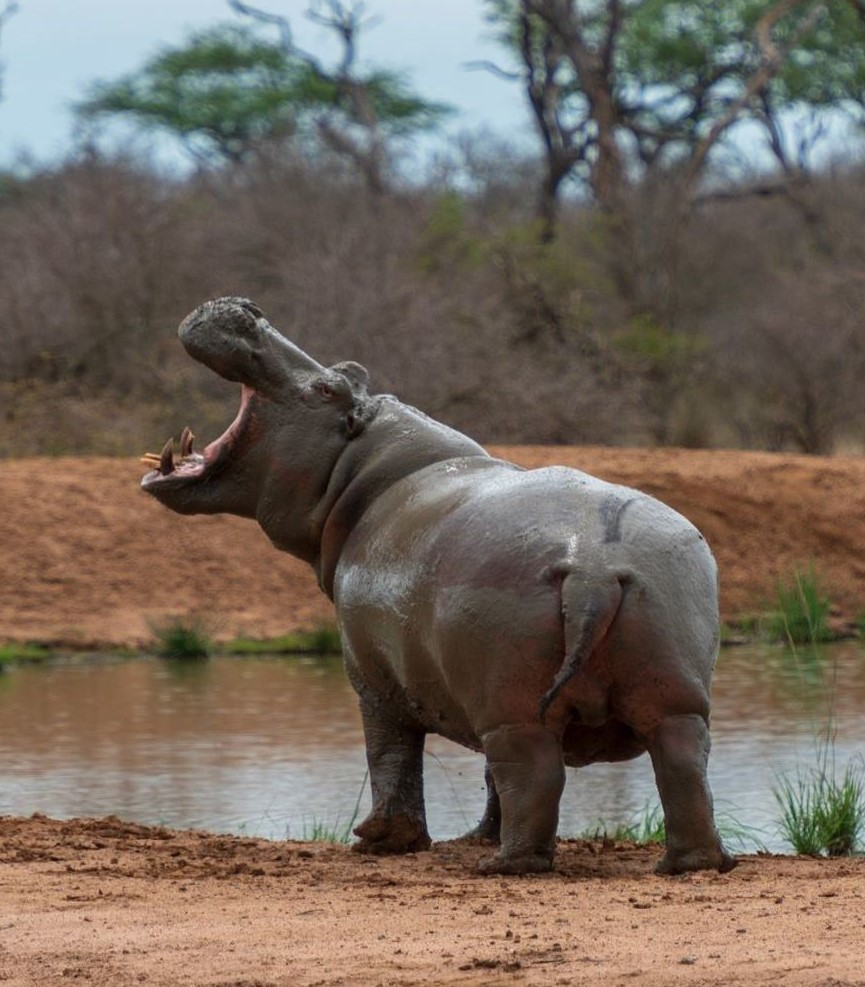

하마
당신은 신중하고 조용하며 집중력이 강하고 사리분별력이 뛰어난 사람이군요
실제 사실에 대하여 정확하게 기억하며 일 처리에 있어서도 신중하며 책임감이 강하네요.
집중력이 강하고 조직적이고 침착합니다.
문제를 해결하는데 과거의 경험을 잘 적용하며, 반복되는 일상적인 일에 대한 인내력이 강한편입니다.
하지만 자신과 타인의 감정과 기분을 배려하며,
전체적이고 타협적 방안을 고려하는 노력이 때로 필요합니다.
당신의 유형은 흔치않은 유형으로, 전 세계 인구의 대략 6%가 이 유형에 속해있다고 합니다.
